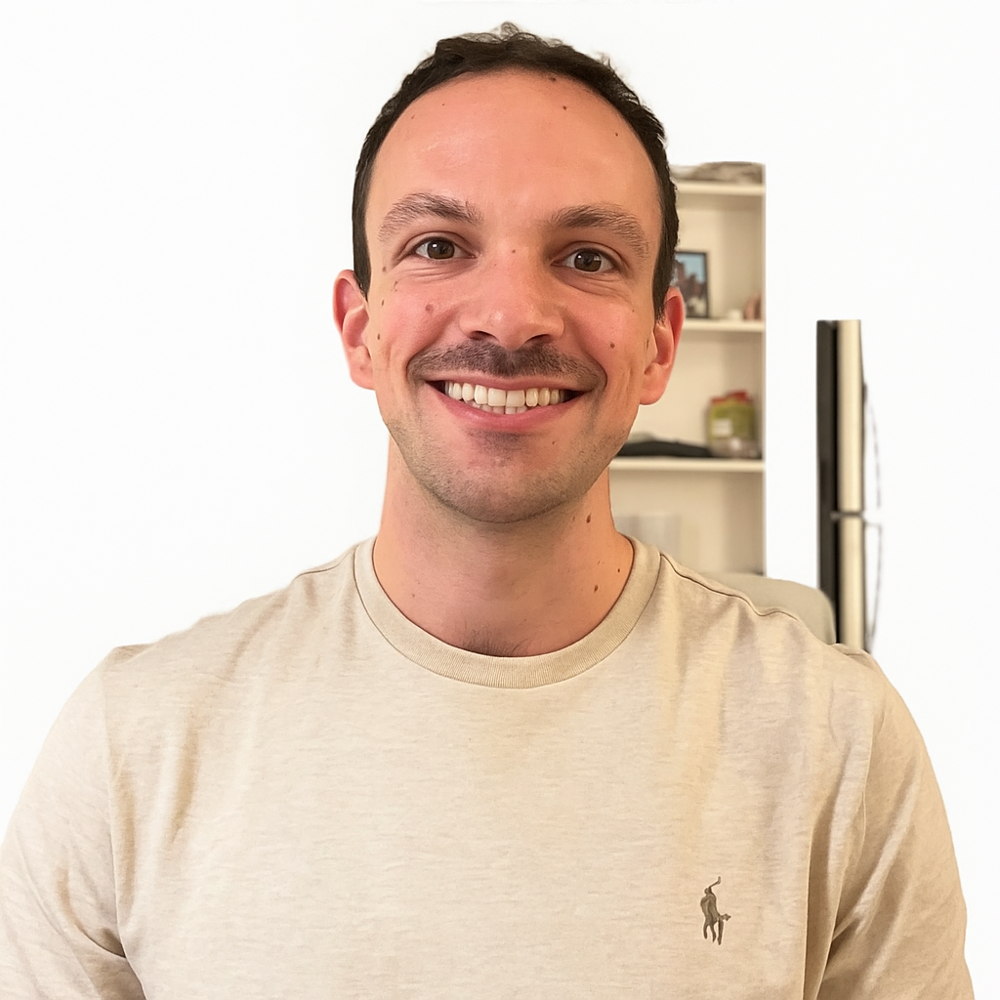
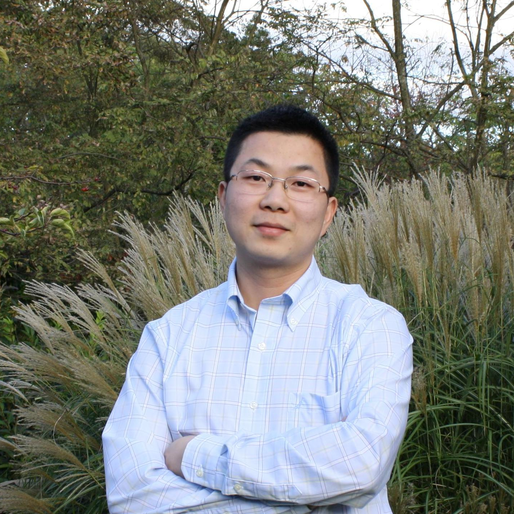
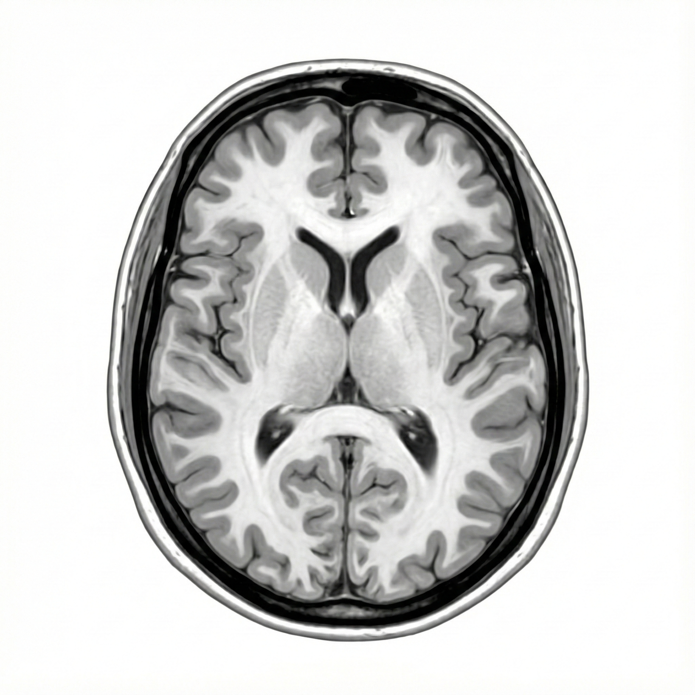
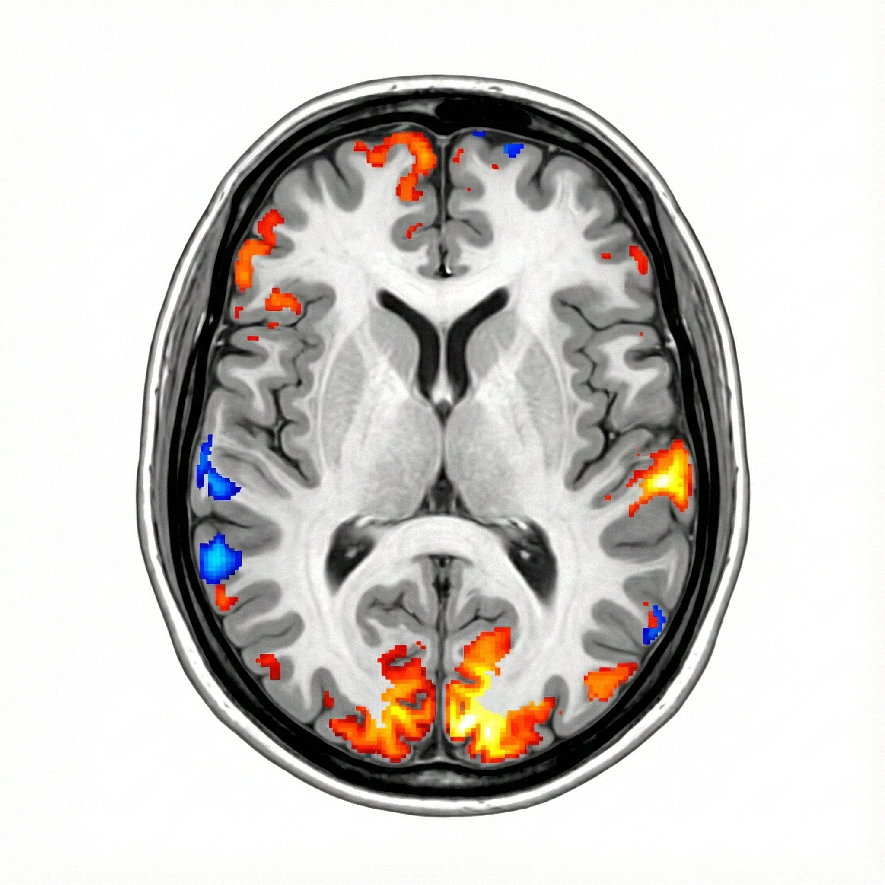
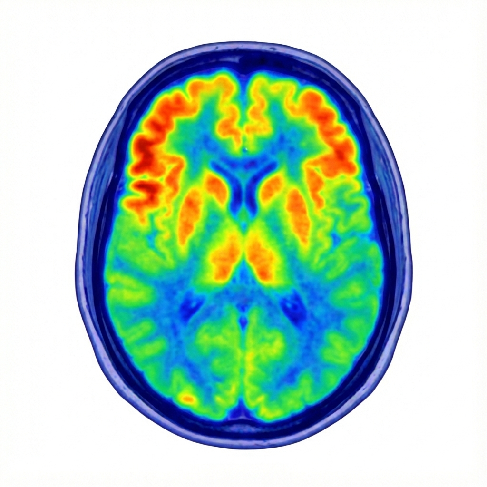
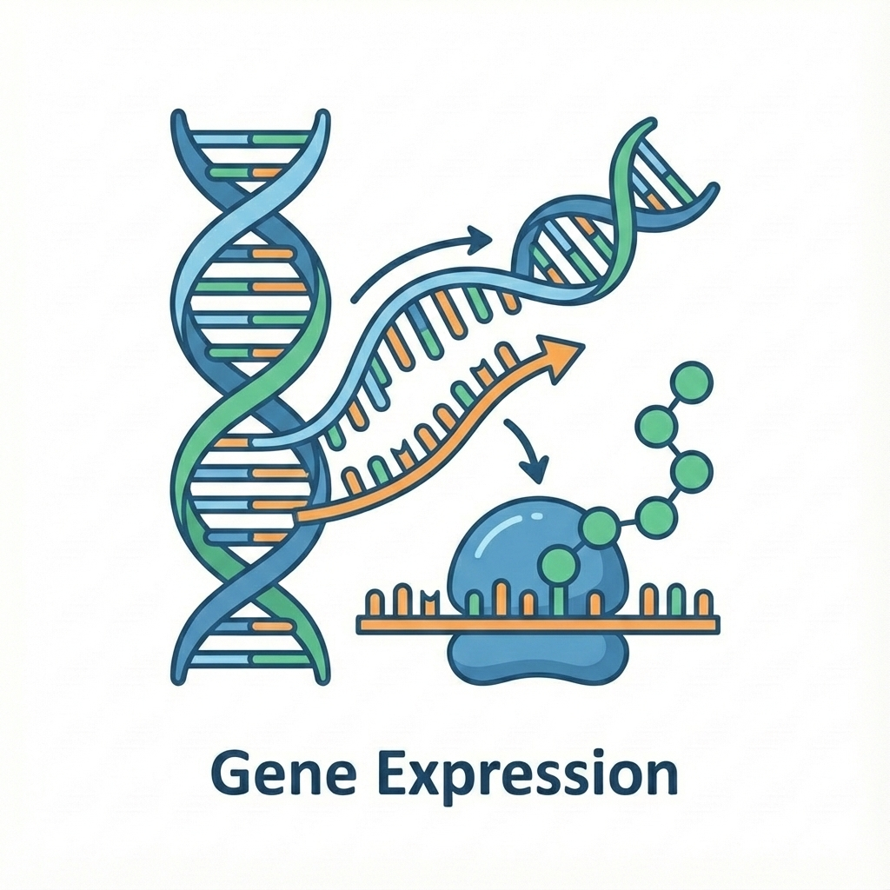
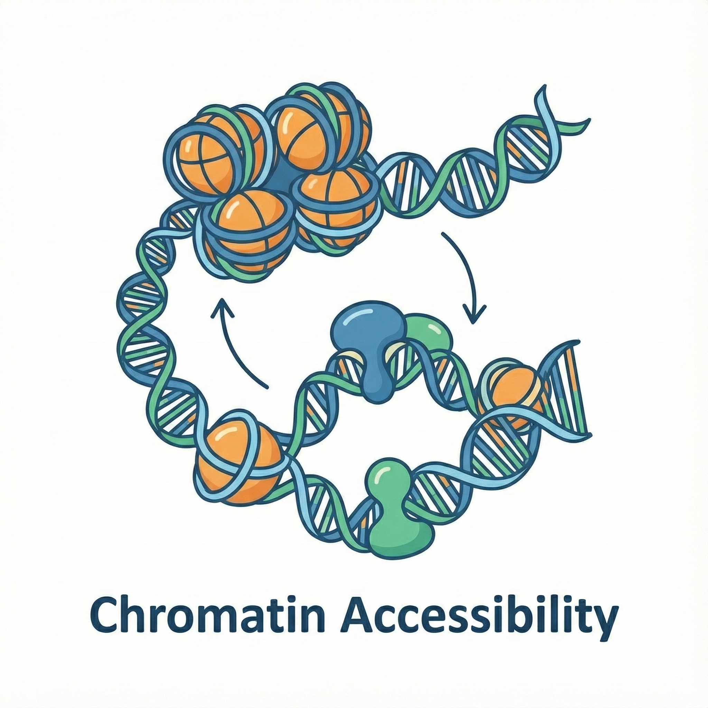
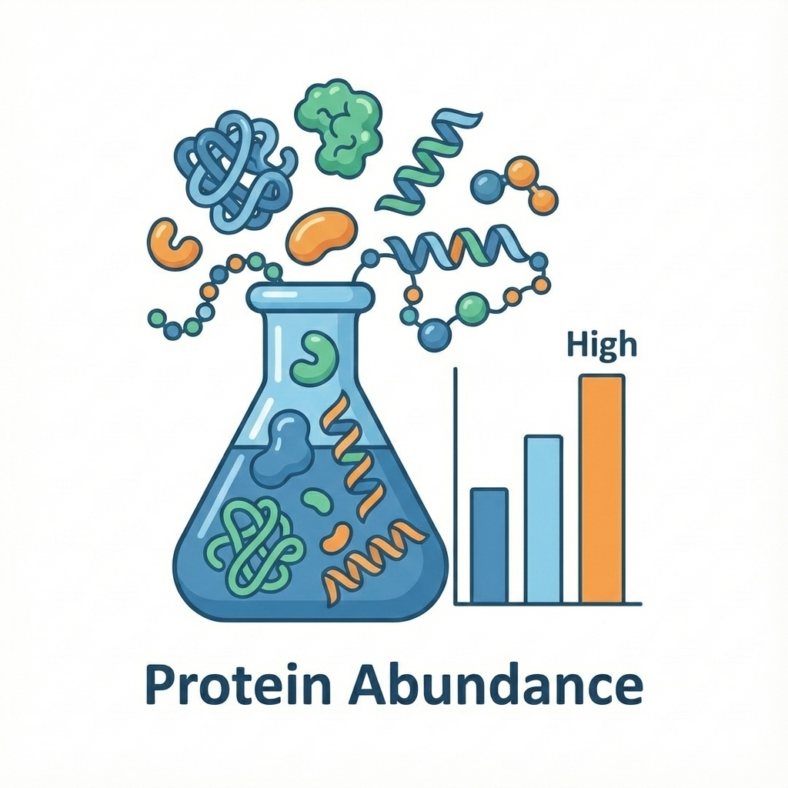

Towards Efficient Inference for Block-wise Missingness with Generallinear modelrandom forestneural netTabPFN Imputation
Qi Xu
Carnegie Mellon University
ICSA Applied Statistics Symposium 2026
Collaborators


Prediction-Powered Inference
- PPI (Angelopoulos et al., 2023) works for semi-supervised settings.
- What if covariates are also potentially missing?
Multi-Modality Data: Biomedical Imaging
Biomedical imaging
- MRI: structural
- fMRI: functional
- PET: metabolic
- Clinical notes



AI / ML Imputation: Imaging
- Advanced vision models can generate missing imaging modalities from the observed ones.
- Advanced language models can produce doctor notes from any available imaging.
- AI generation comes with no built-in quality control.
Multi-Modality Data: Single-Cell Sequencing
Single-cell sequencing
- RNA-seq: gene expression
- ATAC-seq: chromatin accessibility
- Proteomics: protein abundance



AI / ML Imputation: Single Cell
- Advanced single-cell foundation models can impute missing sequencing modalities.
- Model-based predictions can still deviate substantially from the true measurements.
Problem Setup: Data and Patterns
- Complete data: $p$ modalities, $Z=(X_1,\ldots,X_p)\sim\mathcal{P}_Z$.
- $\mathcal{Q}\subseteq 2^{[p]}$ collects all observed patterns.
- Random variable $R\in\mathcal{Q}$ indicates the observed pattern.
- $Z_r=(X_j)_{j\in r},\ r\in\mathcal{Q}$.
- Sample size $n_r$ and population proportion $\pi_r$.
Problem Setup: Assumptions and Target Parameters
- Missing mechanism: MCAR (this talk) or MAR (next arXiv version).
- Positivity: $\pi_{[p]} > 0$.
- Target parameter: regular estimand $\theta^*$.
Literature Review
- Naive estimator: use complete data to estimate $\theta^*$.
- Prediction-powered inference: semi-supervised setting. (Angelopoulos et al., 2023a; PPI++: Angelopoulos et al., 2023b)
- Imputation-powered inference / pattern-stratified PPI: blockwise missing setting. (Zhao and Candès, 2025; Chen et al., 2025; Duan and Pelger, 2025)
- Existing estimators are unbiased and consistent.
- They are not semiparametric efficient, even with perfect AI/ML imputation.
- Question: Can we attain the efficiency lower bound under blockwise missingness and MCAR?
Optimal Estimating Equation
Optimal estimating equation (Robins et al., 1994):
$\mathcal{L}[\mathcal{M}^{-1}(\varphi)] = 0$
- Neumann series: $\mathcal{M}^{-1}=\sum_{k=0}^{\infty}(\mathcal{I}-\mathcal{M})^k$.
- Neumann expansion creates repeated compositions of conditional expectations.
- $\mathcal{M}^k(\cdot)=\sum_{r_1,\ldots,r_k\in\mathcal{Q}}\pi_{r_1}\cdots\pi_{r_k}\mathcal{A}_{r_1}\circ\cdots\circ\mathcal{A}_{r_k}(\cdot)$
- These compositions scale over observed patterns and become computationally intractable.
$\mathcal{A}_r(\cdot)=\mathbb{E}[\cdot\mid Z_r]$$\mathcal{M}=\sum_{r\in\mathcal{Q}}\pi_r\mathcal{A}_r(\cdot)$$\mathcal{L}=\sum_{r\in\mathcal{Q}}\mathbb{I}(R=r)\mathcal{A}_r(\cdot)$
Theory
Optimal estimating equation was established.
The solution attains the semiparametric efficiency lower bound.
Computation
High-order conditional-expectation compositions are computationally intractable.
Balance?
Outline of Our Solution
- Almost-eigen decomposition of $\mathcal{M}$Approximate $\mathcal{M}^{-1}$ with conditional expectations $\mathcal{A}_r$.
- RAY estimatorMotivated by the almost-eigen decomposition.
- Generalized RAY spaceA tractable class containing RAY, IPI, and PPI.
- Adaptive RAY estimatorThe most efficient estimator within generalized RAY space.
Two New Mathematical Tools
Almost-eigen-operator
$\mathcal{M}(\mathcal{A}_s)=\lambda_s\mathcal{A}_s+\mathrm{Remainder}_s$
$\mathcal{M}(\mathcal{A}_s)\approx\lambda_s\mathcal{A}_s$
RAY decomposition
$\varphi=\sum_{s\subseteq[p]}\mathcal{P}_s(\varphi)$
$\mathcal{M}^{-1}(\varphi) \approx \sum_{s\subseteq[p]}\lambda_s^{-1}\mathcal{P}_s(\varphi)$
RAY estimator
RAY approximation
$\mathcal{L}[\mathcal{M}^{-1}(\varphi)] \approx$$\frac{\mathbb{I}(R=[p])}{\pi_{[p]}}\varphi$$+$$\sum_{r\in\mathcal{Q}, r\neq[p]}\omega_r\mathcal{A}_r(\varphi)$$:=\varphi_{RAY}$
RAY estimator
$\sum_{i=1}^{N}\{$$\frac{\mathbb{I}(R_i=[p])}{\hat{\pi}_{[p]}}\varphi(Z_i,\theta)$$+$$\sum_{r\in\mathcal{Q}, r\neq[p]}\hat{\omega}_{ir}\widehat{\mathbb{E}}[\varphi(Z_i,\theta)\mid Z_{ir}]$$\}=0$
- IPW term uses complete cases.
- Augmentation terms use conditional expectations from incomplete patterns.
- RAY approximation is a valid estimating function for $\theta^*$: $\mathbb{E}[\varphi_{RAY}]=0$.
- RAY estimator is unbiased and consistent.
- RAY estimator is multiple robust: remains unbiased and consistent even when conditional expectation models are misspecified.
- Any AI/ML imputation model $f_r:Z_r\to\mathbb{R}^{\dim(\theta^*)}$ can be plugged in.
- RAY estimator is asymptotically normal.
Safeguard Tuning
- With biased AI models, RAY can be less efficient than IPW.
- Solution: Add safeguard tuning parameters $\alpha_r$ for each AI model $f_r$.
$\varphi_{RAY,\alpha}=\frac{\mathbb{I}(R=[p])}{\pi_{[p]}}\varphi + \sum_{r\in\mathcal{Q},r\neq[p]}\alpha_r\omega_r f_r(Z_r)$
- If $f_r$ is non-informative, set $\alpha_r\approx0$.
- Choose optimal $\alpha_r$ by minimizing asymptotic variance, which attains at least the same efficiency as IPW.
Is RAY Uniformly More Efficient?
Intuition of RAY Estimator
RAY applies every model wherever it can.
Why is RAY not uniformly more efficient?
RAY, PPI, and IPI Weighting
Does RAY find the optimal weights?
Generalized RAY Space
Unified estimating equation
$\frac{\mathbb{I}(R=[p])}{\pi_{[p]}}\varphi + \sum_{r\in\mathcal{Q},r\neq[p]}\omega_r f_r(Z_r)$
- $\omega_r=\sum_{s\supseteq r}\frac{\mathbb{I}(R=s)}{\pi_s}\alpha_{r,s}$, subject to $\sum_{s\supseteq r}\alpha_{r,s}=0$.
- $\mathbb{E}[\omega_r]=0$ guarantees unbiasedness, consistency, and multiple robustness.
- RAY, PPI, and IPI estimators are special cases in this space.
- $f_r$ is applied to all observed patterns containing $r$ with different weights.
Adaptive RAY Estimator
- Generalized RAY space is a convex subspace.
- The most efficient estimator within the generalized RAY space is the Adaptive RAY estimator.
Simulation: Outcome Mean Estimation
Summary and Beyond
Summary
- Approximate an intractable operator inversion with conditional expectations.
- A multiply-robust estimator that plugs in any AI/ML imputation model.
- Adaptive RAY achieves an efficiency–feasibility trade-off.
Beyond
- Sufficient and necessary conditions for exact approximation.
- Estimation and inference under missing at random (MAR).
- Efficiency gap between the RAY approximation and the lower bound.
Motivated by emerging AI/ML models, we address a longstanding problem with new mathematical tools.